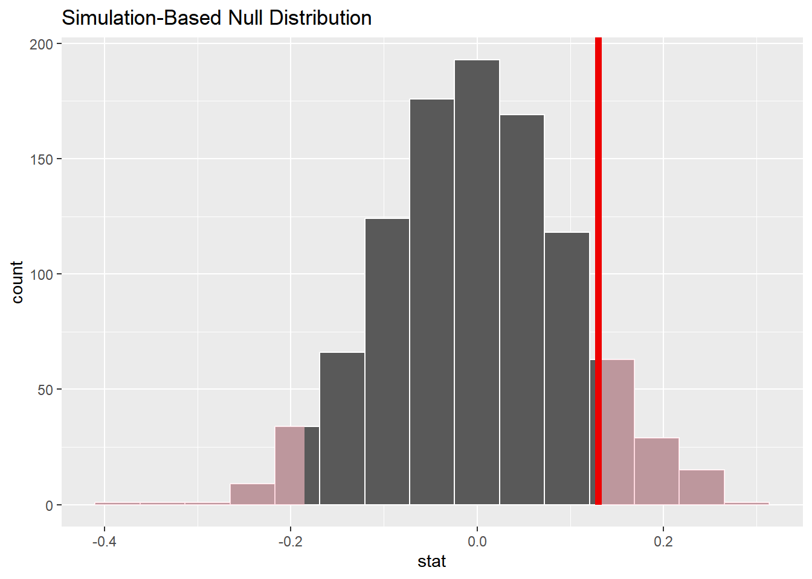
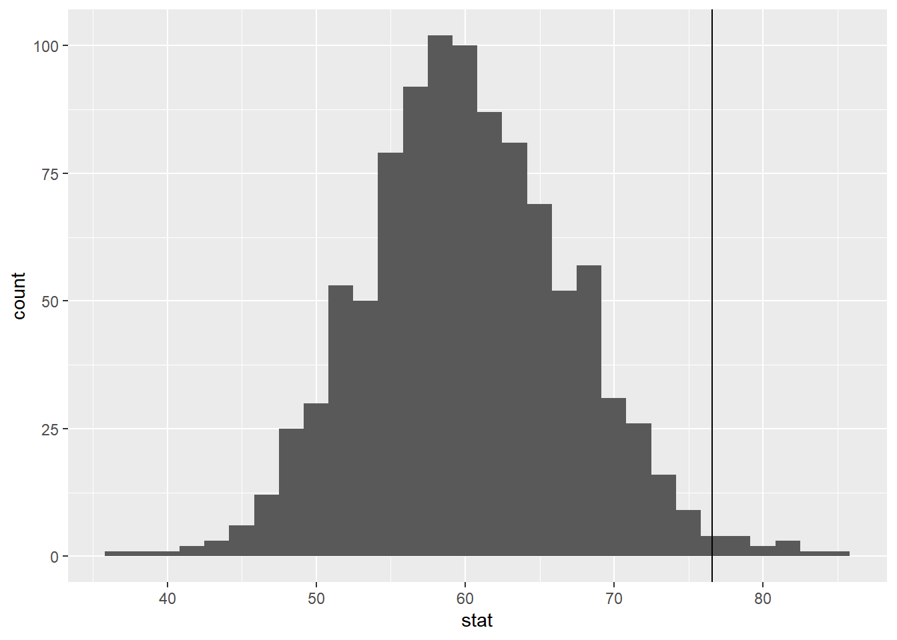
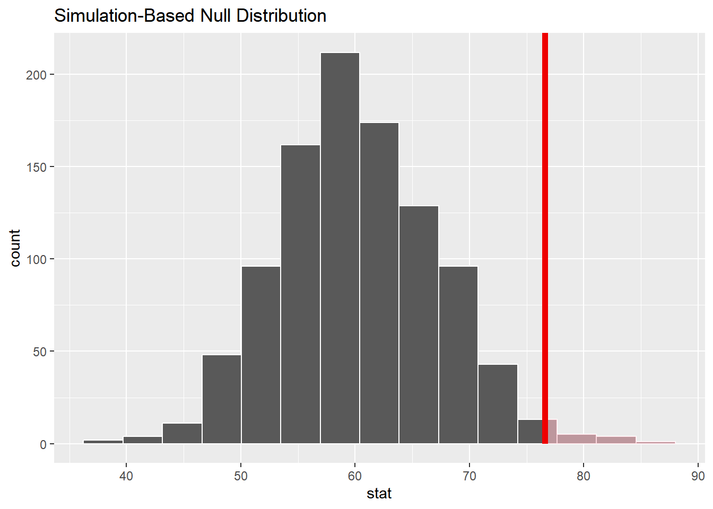
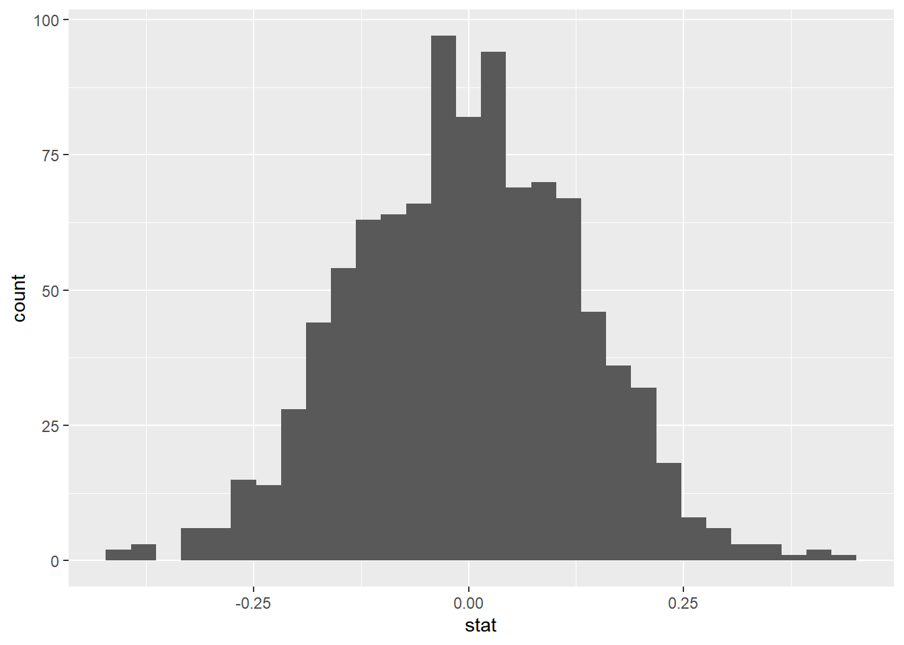
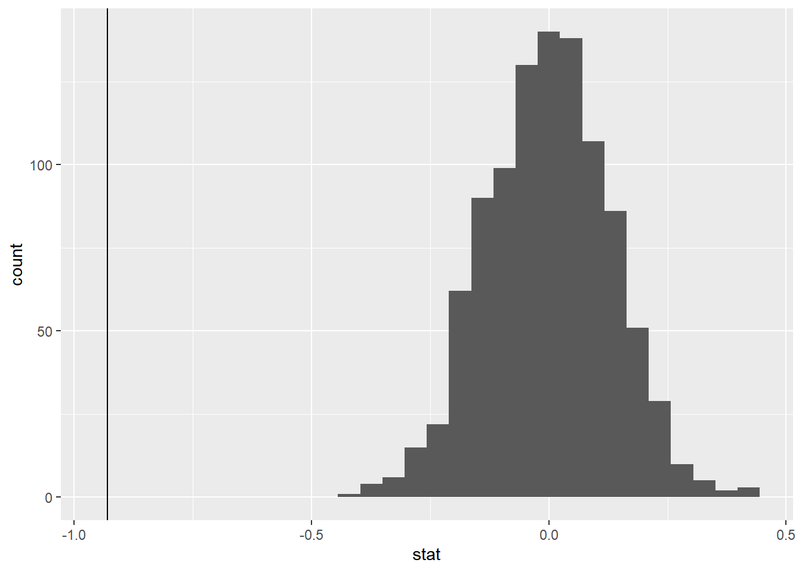
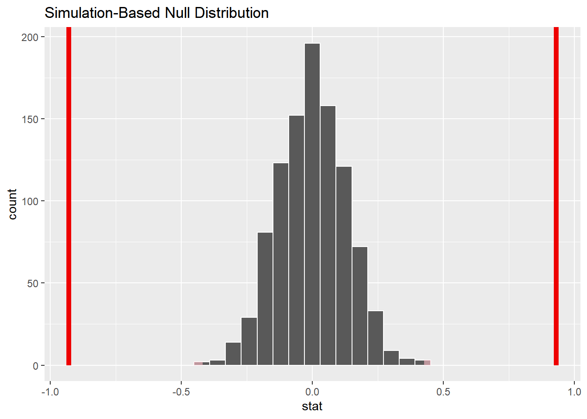

Loading required package: airports
Loading required package: cherryblossom
Loading required package: usdata
Attaching package: 'openintro'
The following object is masked from 'package:modeldata':
ames
Two Categorical Variables: Case study: CPR and blood thinner
Cardiopulmonary resuscitation (CPR) is a procedure used on individuals suffering a heart attack when other emergency resources are unavailable. This procedure is helpful in providing some blood circulation to keep a person alive, but CPR chest compressions can also cause internal injuries. Internal bleeding and other injuries that can result from CPR complicate additional treatment efforts. For instance, blood thinners may be used to help release a clot that is causing the heart attack once a patient arrives in the hospital. However, blood thinners negatively affect internal injuries.
Here we consider an experiment with patients who underwent CPR for a heart attack and were subsequently admitted to a hospital. Each patient was randomly assigned to either receive a blood thinner (treatment group) or not receive a blood thinner (control group). The outcome variable of interest was whether the patient survived for at least 24 hours. We are interested in if the proportion of patients who died were different between those who were given blood thinners or not. Note: We will considered “died” as a “success”
Now, write out your null and alternative hypothesis in proper notation (control - treatment).
\(H_0\): \(\pi_c - \pi_t\) = 0
\(H_a\): \(\pi_c - \pi_t\)\(\neq\) 0
Calculate your sample statistic below. Use proper notation (control - treatment). We will considered “died” as a “success” - what we are taking the proportion of, for the remainder of this activity.
`summarise()` has grouped output by 'group'. You can override using the
`.groups` argument.
# A tibble: 4 × 3
# Groups: group [2]
group outcome count
<fct> <fct> <int>
1 control died 39
2 control survived 11
3 treatment died 26
4 treatment survived 14
estimate<-.78-.65
Simulate
Next, explain how one dot (observation) is created on the permutation null distribution used to test our hypotheses…
Add Response
Now, repeat that process above 1000 times and calculate the p-value below.
set.seed(1234)null_dist<-cpr|>specify(response =outcome , explanatory =group , success ="died")|>hypothesize(null ="independence")|>generate(reps =1000, type ="permute")|>calculate(stat ="diff in props" , order =c("control", "treatment"))
And like last time.. let’s calculate the p-value!
visualize(null_dist)+shade_p_value(obs_stat =.13, direction ="two-sided")

null_dist|>get_p_value(obs_stat =.13, direction ="two-sided")
# A tibble: 1 × 1
p_value
<dbl>
1 0.216
p-value = 0.216
>
Based on a significance level of 0.05…
Decision: Fail to reject the null hypothesis
Fail to reject that the true proportion of patients who died on blood thinners is the same than the true proportion of patients who died without blood thinners
Conclusion: Weak evidence to conclude the alternative hypothesis that the true proportion of patients who died on blood thinners is different than the true proportion of patients who died without blood thinners
One quantitative variable
We have data on the price per guest (ppg) for a random sample of 50 Airbnb listings in 2020 for Asheville, NC. We are going to use these data to investigate what we would of expected to pay for an Airbnb in in Asheville, NC in June 2020. Read in the data and answer the following questions. Today, we are going to investigate if the mean price of an Airbnb in Ashville, NC in June 2020 was larger than 60.
Based on the context of the problem, write out the correct null and alternative hypothesis. Do this in both words and in proper notation.
\(H_0:\)\(\mu\) = 60
The true mean price per guest of an Airbnb in Ashville, NC in June 2020 is equal to 60.
\(H_a:\)\(\mu\) > 60
The true (population) mean price per guest of an Airbnb in Ashville, NC in June 2020 is larger to 60.
Motivation
We want to know how unlikely it would be to observe our statistic under the assumption of the null hypothesis. Calculate and report the sample statistic below using proper notation.
Let’s use simulation-based methods to conduct the hypothesis test specified above. We’ll start by generating the null distribution.
How do we generate the null distribution? Detail the steps below.
We shift! We shift each observation by -16.6 so that the new sapmle mean of our data is 60 (null value)
Next, we resample with replacement 50 times and take the mean.
We do that process 1000 times and plot the distribution.
Let’s repeat this process many many times below using the following code
set.seed(101321)null_dist<-abb|>specify(response =ppg)|>hypothesize(null ="point", mu =60)|>generate(reps =1000, type ="bootstrap")|>calculate(stat ="mean")
Note: What has changed in this set of code from the previous exercises?
mu = type = bootstrap stat = mean
Take a glimpse at null_dist. What does this represent?
`stat_bin()` using `bins = 30`. Pick better value with `binwidth`.

Now, add a vertical line on your null distribution that represents your sample statistic. Based on the position of this line, is you your sample mean is an unusual observation under the assumption of the null hypothesis?
We quantify this using a p-value (as before).
Calculate your p-value below
null_dist|>get_p_value(obs_stat =76.6 , direction ="greater")
# A tibble: 1 × 1
p_value
<dbl>
1 0.012
Let’s visualize it!
visualize(null_dist)+shade_p_value(obs_stat =76.6 , direction ="greater")

Interpret your p-value in the context of the problem
The probability of observing ppg of 76.6 or something larger, given that the true mean ppg really is equal to 60, is about 0.012.
Two-sided
Suppose instead you wanted to test the claim that the mean price of an Airbnb is not equal to $60. Which of the following would change? Select all that apply.
Null hypothesis b. Alternative hypothesis
Null distribution d. p-value
Difference in means
The Iris Dataset contains four features (length and width of sepals and petals) of 50 samples of three species of Iris (Iris setosa, Iris virginica and Iris versicolor). A sepal is the outer parts of the flower (often green and leaf-like) that enclose a developing bud. The petal are parts of a flower that are the pollen producing part of the flower that are often conspicuously colored.
The data were collected in 1936 at the Gaspé Peninsula, in Canada. For the first question of the exam, you will use this data sets to investigate a variety of relationships to learn more about each of these three flower species. The data set is prepackaged in R, and is called iris.
Goal: Previously, we had conducted a hypothesis test for a single mean (price per guest). Now, we are extending what we know to the difference in mean case.
Specifically, we are going to test for a difference in mean Sepal length between the Setosa and Versicolor.
EDA
First, we want to filter the data set to only contain our two Species. Please create a new data set that achieves this below.
What is your point estimate? Using proper notation, report it below (setosa - versicolor).
\(\bar{x_s} - \bar{x_v}\) = -0.93
Now, we are going to see if this difference is by chance, or if this difference is meaningful…
Below, write out the null and alternative hypothesis in both words + notation.
\(H_0: \mu_s - \mu_v = 0\)
\(H_a: \mu_s - \mu_v \neq 0\)
Building a distribution
Let’s use simulation-based methods to conduct the hypothesis test specified above. We’ll start by generating the null distribution.
How do we generate one dot (one observation) on the null distribution? Detail the steps below.
We shuffle / randomize / permute responses to new values of our grouping variable.
Next, we take the new randomized mean for each group and subtract the two
We do this process 1000 times and make our distribution!
Now, let’s do the above process many many times…
null_dist<-iris_filter|>specify(response =Sepal.Length, explanatory =Species)|>hypothesize(null ="independence")|>generate(reps =1000, type ="permute")|>calculate(stat ="diff in means", order =c("setosa", "versicolor"))
Dropping unused factor levels virginica from the supplied explanatory variable 'Species'.
Visualize
Now, create an appropriate visualization fo your null distribution. Where is this distribution centered? Why does this make sense?
`stat_bin()` using `bins = 30`. Pick better value with `binwidth`.

Now, add a vertical line on your null distribution that represents your sample statistic. Based on the position of this line, do you your sample mean is an unusual observation under the assumption of the null hypothesis?
`stat_bin()` using `bins = 30`. Pick better value with `binwidth`.

Calculate your p-value below
null_dist|>get_p_value(obs_stat =-.93, direction ="both")
p-value ~ < 0.001
And visualize it..
Let’s visualize it!
visualize(null_dist)+shade_p_value(obs_stat =-0.93, direction ="both")+shade_p_value(obs_stat =0.93, direction ="two sided")

Using your associated p-value, please write the following in the context of the problem. Assume that \(\alpha\) = 0.05.
– Interpretation of p-value: The probability of observing a difference in mean sepal length between setosa and versicolor (setosa - versicolor) equal to -0.93 or something more extreme given the true mean sepal length between setosa and versicolor are equal is roughly < 0.001.
– Decision: We have evidence to reject the null hypothesis that the true mean sepal length for the setosa species is equal to the true mean sepal length for the versicolor species.
– Conclusion: Strong evidence to conclude that the true mean sepal length for the setosa species is different than the true mean sepal length for the versicolor species.